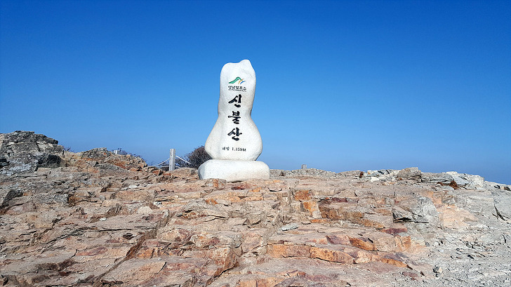

신불산(神佛山)은 울산광역시 울주군 상북면과 삼남면과 경상남도 양산시 하북면의 경계를 이루는 산이다. 태백산맥의 남쪽 끝에 있는 내방산맥 줄기에 있다. 영남 알프스에서 가지산에 이어 두 번째로 높은 산이다. 정상에 암봉이 솟은 가지산과는 달리 토산이며, 1983년 11월 3일 간월산과 함께 군립공원으로 지정되었다. 동쪽은 절벽이고 서쪽은 완만한 구릉으로 이루어져 있다. 설악산의 공룡능선보다 작은 규모의 암릉길인 신불산 공룡릉이 등산 코스로 즐겨 이용된다. 대한민국 산림청이 선정한 한국의 100대 명산 중 하나이다.신불산에서 취서산에 이르는 광활한 능선 위에 가득히 펼쳐진 억새 밭은 좀처럼 다른 산에서 찾아볼 수 없는 장관이다.

영남알프스